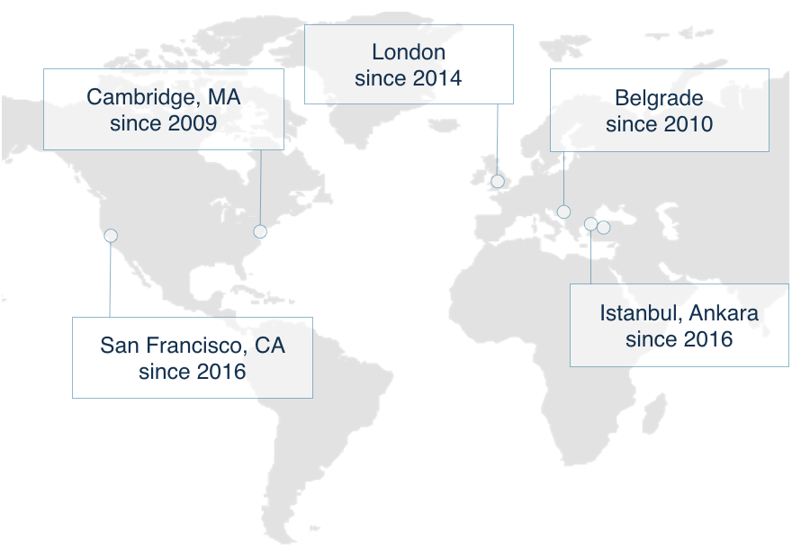
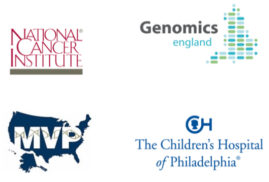
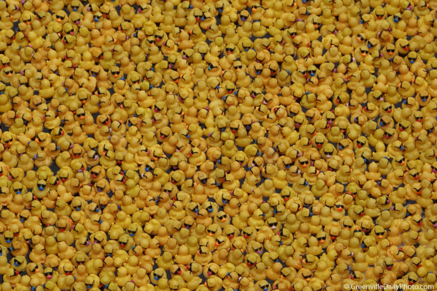
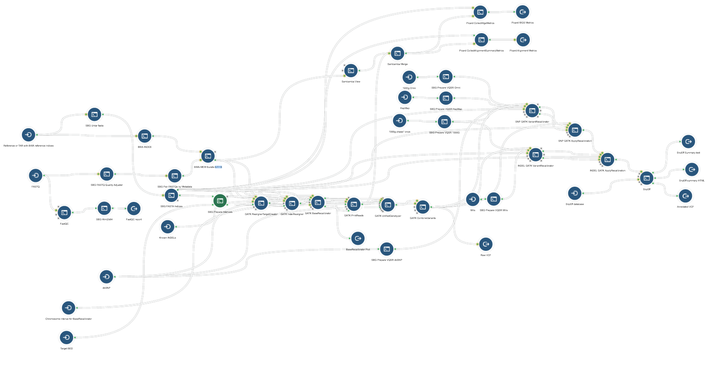
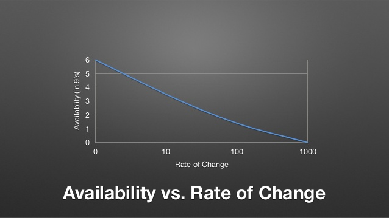
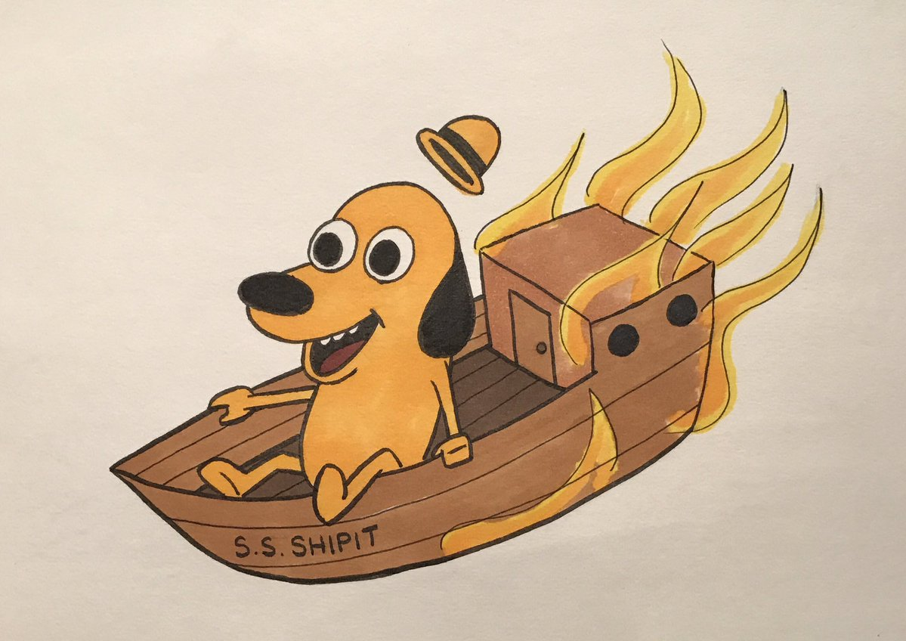

Building
Bridges
while walking on them, or
how we learned to stop worrying and that everything old is new again
Who?


What?
SevenBridges provides the software platform that makes the analysis of and collaboration on population-scale genomics data possible.


Why?

1 hg = 3x10⁹ bp (base pairs) = 3 Gbp
10⁶ hg = 3 Pbp
10⁹ hg = 3 Ebp
10⁶ hg = 3 Pbp
10⁹ hg = 3 Ebp
Million genomes is a reality.
3 Pbp ✕ 30 ÷ 4
~22.5 PB of primary data
3 Pbp ✕ 30 ÷ 4
~22.5 PB of primary data
How?


2012
- ~20 people
- ~10 services
- (mostly) manual QA
- single integration
- monolithic repository
- bi-weekly deploy
- (almost) no clients
- flat org + director of eng
And it was good.

2013/2014
- ~50 people
- ~20 services
- automatic + manual QA
- multiple integrations
- granular repositories
- weekly deploy
- numerous clients
- flat org + director of eng
- vertical product teams

2014/2015
- ~70-100 people
- ~30 services
- flexible deploy
- even more clients
- team leads +
director of eng - engineering + product + QA + FE
- CANCER GENOMICS CLOUD

If we have data, let's look at the data. If all we have are opinions, let's go with mine.
– Jim Barksdale
– Jim Barksdale
Fork yourself.
2015 to now
- ~100-180 people
- ~40 services
- more platforms
- regression + integration
- data-driven decisions

What we learned*
your mileage may vary
Rewrite never*
Unless you absolutely have to.
But then think again.
But then think again.
Iteration is your friend.
Everything is constantly evolving.
So should you.
Know the machine.
 Avoid engineering porn.
Avoid engineering porn.
Minimise human error.
A good tech stack will take you far*
Hug your DevOps and QA engineers.
Give freedom, expect responsibility.
Ask and be kind.
Delay makes hard decisions harder.
